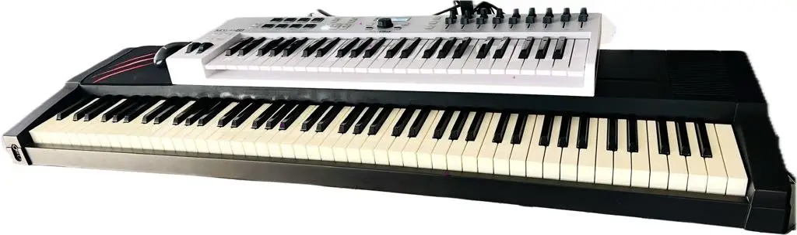
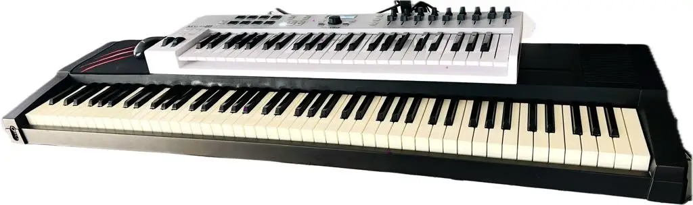

MIDI Controllers Explained: Types, Features, and How to Use Them
Maximize Your Software Instruments: Why MIDI Controllers Are Essential for Hands-On Sound Control
If you want to get the most out of your software instruments, then you need to use MIDI controllers. They are an excellent way to control and play your sounds from your computer or other device storing your sounds. 

- Arturia KeyLAB Essential Mk3 USB MIDI Controller 61 Keys Keyboard, White - link to come
- Arturia Soft Synth/MIDI Controller MiniFreak V + KeyLab Essential 49 BK Bundle Bundle - link to come
- Arturia 430201 AR-KEYSTEP KeyStep Portable Keyboard Sequencer and Controller - link to come
I accompany the previous Arturia instrument with another MIDI controller which is over 20 years old. It is the Roland EP85 digital piano. I no longer use it’s own onboard sounds but instead I connect via MIDI connections to an audio interface into the computer to access any sound I have stored and want to play. The next image shows the Roland keyboard digital piano sitting beneath the Arturia Keylab49 controller. The combination of the two works well and both provide a different touch and therefore different playing experience of the chosen sound.
What Is a MIDI Controller?
A MIDI controller is a device that sends MIDI (Musical Instrument Digital Interface) signals to other hardware or software. It doesn’t produce sound on its own — instead, it controls virtual instruments, DAWs (Digital Audio Workstations), or external synths.
Common uses:
Playing software instruments (like piano, synths, drums)
Controlling DAW parameters (volume, pan, effects)
Triggering samples or loops live
Automating performance gestures (pitch bends, modulation, filter sweeps)
Types of MIDI Controllers
1. Keyboard Controllers
Most common type
Range from 25 to 88 keys
Ideal for piano players and melodic input
Often include pitch/mod wheels, pads, knobs, and faders
Popular for: Studio production, composing, live performance
2. Pad Controllers
Grid-style pads (typically velocity-sensitive)
Great for triggering drums, samples, loops
Often used in hip-hop, EDM, and finger drumming
Popular models: Akai MPD, Novation Launchpad
3. Control Surfaces / DAW Controllers
Designed to control the DAW interface
Includes faders, transport controls, knobs
Often motorized faders (useful for automation)
Best for: Mixing, automation, hands-on DAW control
4. Wind / Breath Controllers
Designed for wind instrument players
Allows expressive control via breath and embouchure
Sends MIDI data for dynamics, pitch, modulation
Used in: Film scoring, expressive solo work
5. Guitar-Style MIDI Controllers
Guitar-like interfaces with MIDI output
Detect pitch/fret info and convert to MIDI
Some are hybrid electric guitars with MIDI capability
Used by: Guitarists wanting to control synths or notation software
Key Features to Look For
Key Count and Action: 25, 49, 61, or 88 keys; synth-action vs semi-weighted vs fully weighted
Velocity and Aftertouch: Adds expressiveness to playing
Assignable Knobs and Faders: Great for controlling synth parameters, volume, effects
Drum Pads: Useful for beat-making and live triggering
Transport Controls: Play, stop, record buttons to control your DAW
MIDI Connectivity: USB-MIDI, 5-pin DIN MIDI, Bluetooth MIDI (for wireless setups)
How to Use a MIDI Controller in Your Setup
1. Connect It to Your Computer or DAW
Via USB or traditional MIDI cables
Ensure your DAW recognizes the controller (most modern DAWs have auto-mapping for common models)
2. Load a Virtual Instrument or Plugin
For example: Piano VST, synth, drum machine
Play the keys or pads to trigger sounds
3. Map Controls for Better Workflow
Assign knobs and sliders to filter cutoff, reverb levels, track volume, etc.
Customize layouts to match your creative flow
4. Record and Automate
Record MIDI performances in your DAW
Edit velocity, timing, and expression after recording
Automate parameters using faders/knobs or the automation lane
Who Should Use a MIDI Controller?
Beginners: Learn piano or experiment with synths
Producers: Speed up beat making and sound design
Composers: Lay down orchestral sketches or themes quickly
Live Performers: Trigger samples or control synths in real time
I plan to talk more about the options available and would love for you to experience more about what is possible using technology with music.
I would love to hear from you and know where you are on your musical journey. I am keen to provide more information about the various options available and the fun experiences you can have when connecting music with computers and using technology in general.
Please send a message or leave a comment below so I can provide some more input into your journey.
Return to my Home page.
Disclaimer: I am an affiliate marketer and I earn from qualifying purchases that you make